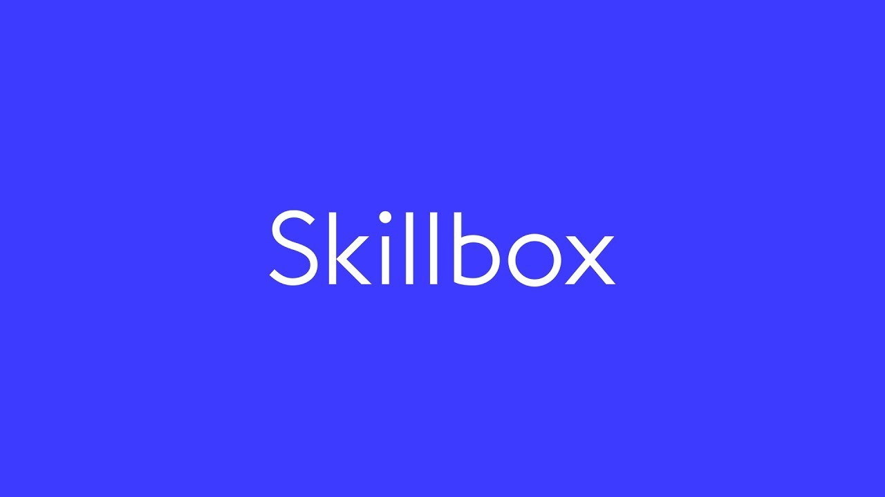

Основной контент
Лучшие онлайн-школы: топ-10, рейтинг 2025 года
Мы собрали лучшие онлайн-школы, которые хорошо зарекомендовали себя по реальным отзывам потребителей в 2025 году. Все представленные школы предлагают партнерские программы, что позволяет не только получить качественное образование, но и возможность дополнительного заработка.
-
Skillbox
 Средняя оценка: 4.9/5
Skillbox предлагает широкий спектр курсов по различным направлениям, включая программирование, дизайн, маркетинг и управление. Каждый курс разработан с учетом современных требований рынка труда.
Преимущества:
- Актуальные материалы, разработанные экспертами отрасли.
- Удобный онлайн-формат с возможностью взаимодействия с наставниками.
- Работа над реальными проектами для практического освоения навыков.
- Регулярное обновление программ в соответствии с последними тенденциями.
- Выдача сертификата по завершении курса, повышающего конкурентоспособность на рынке труда.
Недостатки:
- Высокая стоимость некоторых курсов.
- Необходимость самостоятельной мотивации для прохождения курса.
Минимальная цена: от 29 000 рублей
-
GeekBrains
Средняя оценка: 4.8/5
GeekBrains предлагает курсы по наиболее востребованным профессиям в IT, дизайне и маркетинге. Программы адаптированы под современные реалии и ориентированы на практическое применение знаний.
Преимущества:
- Получение практического опыта через работу над реальными проектами.
- Доступ к сообществу экспертов и выпускников для обмена опытом.
- Бесплатные мастер-классы и вебинары для расширения знаний.
- Помощь в трудоустройстве по окончании обучения.
Недостатки:
- Некоторые курсы могут быть перегружены информацией.
- Возможны задержки в обратной связи от наставников.
Минимальная цена: от 35 000 рублей
-
Нетология
Средняя оценка: 4.7/5
Нетология специализируется на курсах по интернет-маркетингу, дизайну, аналитике и управлению. Предлагает программы как для начинающих, так и для профессионалов, желающих повысить квалификацию.
Преимущества:
- Качественные и структурированные учебные материалы.
- Профессиональные преподаватели с практическим опытом.
- Доступ к материалам после завершения курса.
- Активная помощь в трудоустройстве выпускников.
- Возможность получения диплома или сертификата по окончании обучения.
Недостатки:
- Высокая интенсивность курса требует тщательного планирования времени.
- Некоторые студенты отмечают недостаточное количество видеоуроков по определенным темам.
Минимальная цена: от 25 000 рублей
-
Skyeng
Средняя оценка: 4.6/5
Skyeng – одна из крупнейших онлайн-школ по изучению английского языка, предлагающая индивидуальные и групповые занятия с носителями языка и русскоязычными преподавателями.
Преимущества:
- Индивидуальный подход к каждому ученику.
- Гибкий график занятий.
- Использование инновационной образовательной платформы.
- Проверенные методики обучения.
- Возможность подготовки к международным экзаменам.
Недостатки:
- Стоимость выше среднего по рынку.
- Не всегда удается подобрать идеального преподавателя с первого раза.
Минимальная цена: от 2 500 рублей за месяц занятий
-
Udemy
Средняя оценка: 4.5/5
Udemy – международная образовательная платформа, предлагающая тысячи курсов по программированию, маркетингу, личностному развитию, дизайну и многим другим направлениям.
Преимущества:
- Огромный выбор курсов на разные темы.
- Гибкость в изучении материалов.
- Доступ к курсам на пожизненной основе.
- Возможность обучения у международных экспертов.
- Частые скидки на курсы.
Недостатки:
- Отсутствие единой структуры курсов.
- Качество курсов зависит от конкретного преподавателя.
Минимальная цена: от 1 000 рублей
-
Яндекс Практикум
Средняя оценка: 4.8/5
Яндекс Практикум – онлайн-платформа для обучения востребованным профессиям в сфере IT, аналитики, маркетинга и дизайна. Курс ориентирован на практическое обучение и трудоустройство.
Преимущества:
- Большое количество практических заданий.
- Качественная обратная связь от наставников.
- Возможность стажировки после окончания курса.
- Сильное сообщество выпускников.
- Гарантия трудоустройства для некоторых программ.
Недостатки:
- Высокая стоимость курсов.
- Некоторые студенты отмечают интенсивную нагрузку.
Минимальная цена: от 30 000 рублей
-
SkillFactory
Средняя оценка: 4.6/5
SkillFactory – платформа для обучения программированию, анализу данных и искусственному интеллекту. Курсы разработаны совместно с лидирующими IT-компаниями.
Преимущества:
- Современные и востребованные программы.
- Много практических заданий.
- Интерактивная образовательная платформа.
- Помощь с трудоустройством.
- Гибкий график обучения.
Недостатки:
- Некоторые курсы требуют высокой самоорганизации.
- Иногда встречается устаревший материал.
Минимальная цена: от 35 000 рублей
-
OTUS
Средняя оценка: 4.5/5
OTUS – образовательная платформа, ориентированная на IT-специалистов с опытом работы. Курсы разработаны совместно с ведущими компаниями, а обучение проходит в формате интенсивов.
Преимущества:
- Продвинутые программы для опытных специалистов.
- Курсы разработаны совместно с работодателями.
- Обратная связь от практикующих экспертов.
- Закрытое сообщество специалистов.
- Гарантированное трудоустройство для успешных выпускников.
Недостатки:
- Не подходит для новичков.
- Высокая стоимость курсов.
Минимальная цена: от 50 000 рублей
-
ProductStar
Средняя оценка: 4.6/5
ProductStar предлагает курсы по продуктовому менеджменту, маркетингу, аналитике и другим востребованным направлениям. Подходит как для начинающих, так и для опытных специалистов.
Преимущества:
- Современные программы, адаптированные под рынок.
- Участие экспертов из крупных компаний.
- Практическая направленность курсов.
- Доступ к закрытому сообществу выпускников.
- Помощь в трудоустройстве.
Недостатки:
- Некоторые курсы требуют предварительной подготовки.
- Достаточно интенсивное обучение.
Минимальная цена: от 30 000 рублей
-
BeOnMax
Средняя оценка: 4.4/5
BeOnMax – образовательная платформа с курсами по маркетингу, разработке, дизайну и личностному росту. Отличается доступными ценами и возможностью бесплатного тестового периода.
Преимущества:
- Доступные цены на курсы.
- Гибкий график обучения.
- Бесплатные вводные курсы.
- Практическая направленность.
- Сертификат после завершения обучения.
Недостатки:
- Качество некоторых курсов варьируется.
- Меньше обратной связи по сравнению с конкурентами.
Минимальная цена: от 5 000 рублей
Часто задаваемые вопросы
- Какая онлайн-школа самая лучшая? – Это зависит от направления: для IT подойдут OTUS и Яндекс Практикум, для маркетинга – Нетология и ProductStar.
- Как выбрать онлайн-школу? – Обратите внимание на стоимость, отзывы, наличие партнерской программы и сертификатов.
- Можно ли получить трудоустройство после курсов? – Да, многие школы помогают с трудоустройством, например, SkillFactory и OTUS.
- Как работает партнерская программа? – Вы рекомендуете курсы и получаете процент от продаж.
- Какая минимальная стоимость обучения? – В BeOnMax курсы начинаются от 5 000 рублей, на других платформах – от 25 000 рублей.
- Сколько длится обучение? – От нескольких недель до 12 месяцев, в зависимости от программы.
- Есть ли возможность рассрочки? – Да, большинство платформ предоставляют рассрочку.
- Нужен ли диплом для работы после онлайн-курсов? – В IT, маркетинге и аналитике важнее навыки и портфолио.
- Какие курсы подойдут новичкам? – GeekBrains, BeOnMax и Нетология предлагают базовые программы.
- Можно ли учиться бесплатно? – Многие школы предоставляют бесплатные вводные курсы и вебинары.